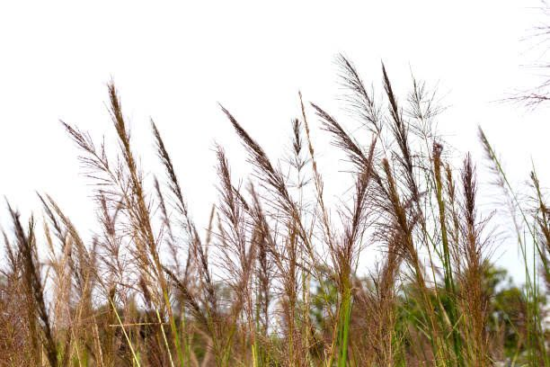
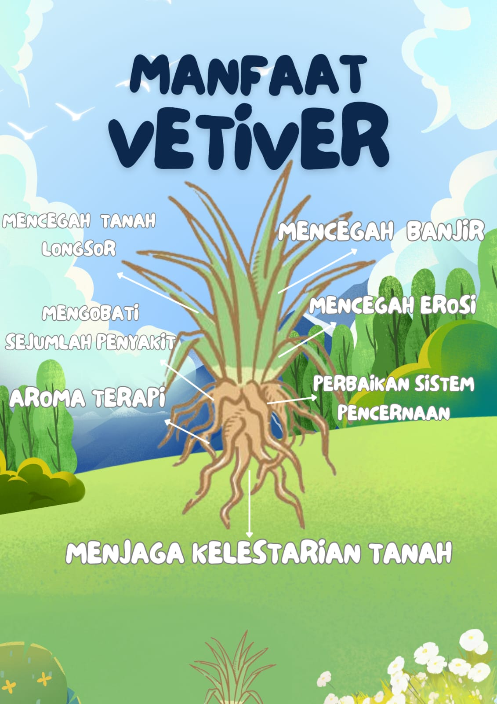

VETIVER
Kelompok 3
Latar Belakang
Indonesia adalah negara yang rawat bencana. Selama bulan Januari 2021, telah terjadi 263 bencana. Bencana di Indonesia didominasi oleh banjir, tanah longsor, dan puting buliung. Tanah longsor di Indonesia telah terjadi 42 kali selama bulan ini. Kejadian ini tidak hanya menimbulkan kerugian harta benda, tetapi juga meranggut nyawa. Peristiwa ini terjadi hampir setiap tahun. Dalam mencegah tanah longsor di Indonesia, presiden mengajak masyarakat untuk melakukan gerakan. Salah satunya adalah gerakan menanam vetifer pada lahan yang rawan longsor.
Gambaran Umum
Vetiver(Vetiver zizanioides) adalah sejenis rumput yang berasal dari Indonesia, Haiti, Reunion, India. Tumbuhan ini dapat tumbuh sepanjang tahun, dan dikenal banyak orang sejuk lama sebagai sumber wangi-wangian. Tumbuhan ini termasuk dalam famili Poaceae, dan masih sekeluarga dengan, serai, padi, gandum, dan sorghum.
Daun dan Bunga
Daun vetiver menyerupai tebu, namun lebih kecil dengan ujung yang halus dan bagian dasar yang keras serta kuat. Vetiver memiliki variasi daun yang beragam, beberapa jenisnya memiliki ujung yang tajam karena adanya duri kecil. Namun, jenis vetiver yang sering digunakan untuk produksi minyak dan pencegahan erosi cenderung memiliki daun yang tidak tajam. Daun vetiver memiliki jumlah stomata yang lebih sedikit dibandingkan dengan jenis rumput lainnya, sehingga mampu bertahan selama musim kemarau yang panjang. Bunga vetiver berupa perbungaan dengan biji yang berukuran panjang sekitar 1,5 meter, berwarna coklat dan ungu. Bunga vetiver terdiri dari bunga jantan dan betina yang terpisah, dengan floret bagian atas berfungsi sebagai bunga jantan penghasil polen, sedangkan bagian bawahnya bersifat hemafrodit.

Batang dan Akar
Vetiver tumbuh hingga setinggi 150 sentimeter dan membentuk rumpun selebar itu. Dalam kondisi yang baik, batang tegaknya dapat mencapai ketinggian tiga meter. Batangnya tinggi dan daunnya panjang, tipis, dan agak kaku. Bunganya berwarna ungu kecokelatan. Tidak seperti kebanyakan rumput, yang membentuk sistem akar seperti tikar yang menyebar secara horizontal, akar vetiver tumbuh ke bawah, sedalam dua hingga empat meter. Batang tanaman tegak dan kaku. Tanaman ini dapat bertahan hidup di aliran air yang dalam. Di air yang jernih, tanaman ini dapat bertahan hidup hingga dua bulan. Sistem perakaran vetiver berstruktur halus dan sangat kuat. Ia dapat tumbuh sedalam 3–4 m dalam tahun pertama. Vetiver tidak memiliki stolon maupun rimpang . Karena semua karakteristik ini, tanaman vetiver sangat toleran terhadap kekeringan dan dapat membantu melindungi tanah dari erosi lembaran . Jika terjadi pengendapan sedimen , akar baru dapat tumbuh dari simpul yang terkubur.
Manfaat Vetiver
Rumput vetiver dapat mencegah tanah longsor, banjir, dan erosi. Vetiver pun bisa menjaga kelestarian tanah, vetive pun bisa dipakai sebagai aroma terapi, mengobati sejumlah penyakit, dan banyak guna lainnya.
px">
Pendapat Kelompok kami
Vetiver adalah tanaman yang sangat efektif dalam pencegahan erosi tanah berkat akar yang dalam dan kuat, yang membantu menstabilkan tanah dan mengurangi aliran air berlebihan. Selain mencegah hilangnya lapisan tanah subur, vetiver juga meningkatkan kualitas tanah dengan memperbaiki strukturnya dan menyediakan habitat bagi mikroorganisme bermanfaat. Penggunaan vetiver di daerah rawan erosi memberikan manfaat tambahan, seperti meningkatkan kelembapan tanah dan mengurangi pencemaran. Selain itu, vetiver dapat berfungsi sebagai tanaman penutup tanah dengan nilai ekonomi melalui produk kerajinan. Secara keseluruhan, vetiver adalah solusi berkelanjutan untuk pencegahan erosi dan pengelolaan tanah yang lebih baik.
.jpg)